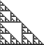
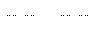
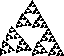
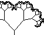

| One way to guarantee self-similarity is to build a shape by applying the
same process over smaller and smaller scales. This idea can be realized with a
process called initiators and generators. |
| The initiator is the starting shape. |
| The generator is a collection of
scaled copies of the initiator. |
| The rule is this: in the generator,
replace each copy of the initiator with a scaled copy of the generator (specifying
orientations where necessary). |
| Examples |
|  |
Sierpinski gasket How can we turn
"connect the midpoints and remove the middle triangle" into initiators and generators? |
|
Koch curve Tents upon tents upon tents ... makes
a shape we shall see
is very strange, a curve enclosed in a small box and yet that is infinitely long. |
|  |
Cantor set Cut all the tents out of the Koch curve
and we are left
with something that appears to be little more than holes. But we can be fooled by appearances. |
|  |
Spinning gaskets Rotate the lower left third of
the gasket and
... the lower left third of every piece rotates, each relative to the piece that contains it. |
|  |
Branching trees Here is Jeff Sorbo's
software to animate binary branching trees |
|